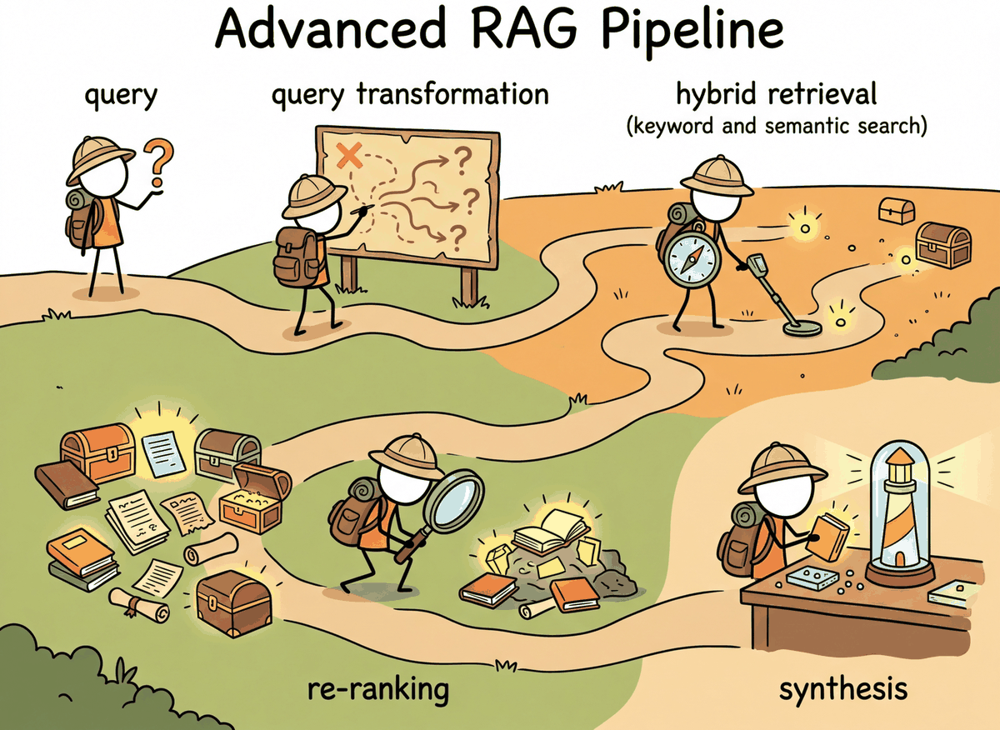
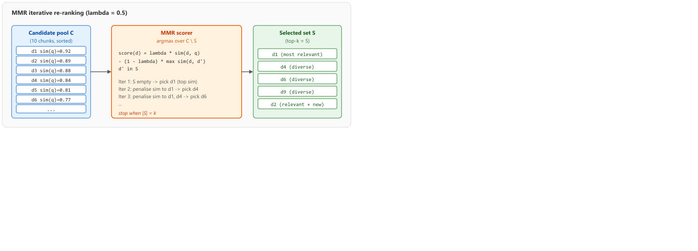
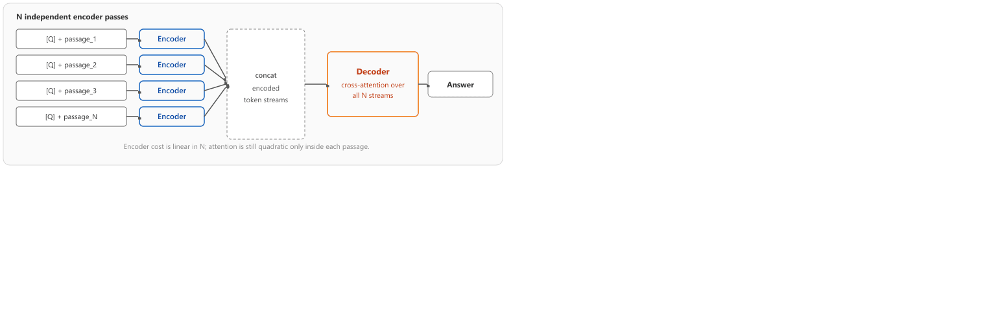
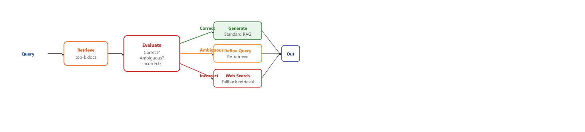
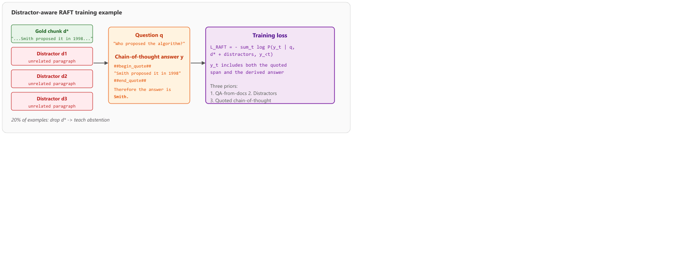

It is not enough to find the right answer. You must first learn to ask the right question.
RAG, Inquisitive AI Agent
Section 35.1 covered the two infrastructure-level retrieval enhancements: hybrid dense+sparse search with Reciprocal Rank Fusion, and cross-encoder re-ranking. This continuation shifts to query-side and pipeline-level techniques: rewriting and decomposing queries, HyDE (hypothetical document embeddings), contextual retrieval (Anthropic 2024), self-corrective RAG (CRAG, Self-RAG), fusion and multi-modal retrieval, plus a comparison of when each advanced technique pays off.
Prerequisites
This section extends the basic RAG architecture from Section 32.1 with advanced retrieval techniques. You should understand embedding similarity search from Section 31.1 and document chunking strategies from Section 31.6. The reranking models discussed here build on the cross-encoder concepts that complement the bi-encoder approach covered in the embedding chapter.

The advanced-RAG literature sprawls, but every technique in this chapter slots into one of six families. (1) Indirect embeddings change what gets embedded on either side: HyDE (Section 35.2.1.1) embeds a hypothetical answer at query time, HyPE (Section 35.2.1.4) embeds hypothetical questions at indexing time. (2) Context compression shrinks what reaches the generator: Anthropic contextual retrieval (Section 35.2.2), LangChain compression filters (Code Fragment 35.2.3). (3) Fusion merges multiple retrieval signals: hybrid dense+sparse (Section 35.1), MMR diversification (Section 35.2.1.5), RAG-Fusion with RRF (Section 35.2.1.6), Fusion-in-Decoder (Section 35.2.1.7). (4) Self-validation wraps the loop in a corrective pass: CRAG (Section 35.2.3.1), Self-RAG (Section 35.2.3.2). (5) Generator fine-tuning trains the LLM to handle imperfect retrieval: RAFT (Section 35.2.3.3). (6) Cache-augmented generation replaces retrieval with cached prefill: CAG (Section 32.2.3.4). Most production systems mix one technique from each of the first three families, then add a self-validation pass only when accuracy demands it.
35.2.1 Query Transformation
HyDE (Hypothetical Document Embeddings, Gao et al., 2022) had the unusual property that it worked better than expected on benchmarks where the "hypothetical" answer was completely wrong. The intuition that emerged: the embedding space cares about topical shape more than factual content, so the wrong answer in the right neighborhood retrieves the right documents. The paper's reviewer comments reportedly included one variation of "this is offensive but it works".
Hybrid search and cross-encoder re-ranking (covered in 35.1) attack failure modes that live in the index. The techniques in this half work upstream of the index: they reshape the query itself, or wrap the whole retrieve-then-generate loop in a verification pass so the system can notice and recover when retrieval misses. We start with the lightest-weight intervention, multi-query expansion, where the model rephrases the user's question into several variants and merges the results.
# Multi-query expansion: ask the LLM to paraphrase the question N ways, retrieve
# for each paraphrase, then merge the unique hits. Cheap recall boost on ambiguous queries.
def multi_query_retrieve(query: str, collection, k: int = 5, num_variants: int = 3) -> list[dict]:
"""Generate query variants, retrieve for each, and dedupe by chunk id."""
variants_response = client.chat.completions.create(
model="gpt-4o-mini", # Quality matters less than diversity here, so use a cheap model.
messages=[
{"role": "system",
"content": f"Generate {num_variants} alternative phrasings of the following search query. Return one per line."},
{"role": "user", "content": query},
],
)
variants = variants_response.choices[0].message.content.strip().splitlines()
all_queries = [query, *variants] # Original + paraphrases
seen_ids, merged = set(), []
for q in all_queries:
hits = collection.query(query_texts=[q], n_results=k)
for doc, meta, doc_id in zip(hits["documents"][0], hits["metadatas"][0], hits["ids"][0]):
if doc_id in seen_ids:
continue # Same chunk surfaced by another paraphrase; skip the duplicate.
seen_ids.add(doc_id)
merged.append({"document": doc, "metadata": meta})
return merged[: k * 2] # Expanded recall set, capped at 2kMulti-query expansion is the single easiest advanced technique to implement and typically boosts recall by 10 to 20%. If you only have time for one improvement to your naive RAG pipeline, start here. It costs one extra LLM call (use a cheap, fast model) and requires no changes to your index or embeddings.
35.2.1.3 Step-Back Prompting
Step-back prompting (Zheng et al., 2023) generates a more abstract or general version of the query before retrieval. For example, the query "What was the GDP growth rate of Japan in Q3 2024?" might be stepped back to "What are the recent economic trends in Japan?" The broader query retrieves documents that provide necessary background context, which is then combined with results from the specific query. compares these three query transformation strategies.
A worked HyDE pass illustrates why "hypothetical and wrong" can still help. User query: "How does a transformer's KV cache reduce inference cost?" HyDE step 1: ask the LLM to write a fake passage as if it were the answer ("The KV cache stores previously computed key and value tensors so that during autoregressive decoding the model can skip recomputation for prior tokens, reducing complexity from O(n^2) to O(n) per step..."). HyDE step 2: embed that hypothetical passage, not the original question. The embedding now lives in "answer space," surrounded by real passages with similar phrasing. Even if the fake passage gets a fact wrong (say, it confuses K with V), the embedding is closer to actual technical explanations than the original question's embedding was, and the retriever surfaces better documents.
HyDE can be written compactly as a two-step transformation of the retrieval query. Let $q$ be the user query, $f_\mathrm{LLM}$ a hypothetical-passage generator (one or many samples), $E$ the document embedding model, and $\mathrm{sim}$ the index's similarity metric. Standard dense retrieval scores the corpus as $s_\mathrm{dense}(d) = \mathrm{sim}(E(q), E(d))$. HyDE instead samples $N$ hypothetical answers $\tilde{d}_i = f_\mathrm{LLM}(q)$ and scores documents against their mean embedding:
Setting $N = 1$ is the cheap default; $N = 4$ to $8$ averages out factual errors in any single hypothetical passage and is the typical published recipe. The mean-embedding pool is what makes the retriever robust to the "K versus V confusion" failure: a single wrong hypothesis lands near "encoder attention", but four wrong-but-related hypotheses average toward the centroid of "KV cache and inference cost" passages.
from openai import OpenAI
client = OpenAI()
HYDE_PROMPT = (
"Write a short, technical paragraph that directly answers the user's "
"question as if you were quoting it from a documentation page. Do not "
"say 'I don't know'. Be confident even if uncertain about specifics."
)
def hyde_retrieve(query: str, collection, k: int = 5, n_samples: int = 4):
"""HyDE: generate N hypothetical answers, embed their mean, then retrieve."""
hypothetical_passages = []
for _ in range(n_samples):
resp = client.chat.completions.create(
model="gpt-4o-mini",
temperature=0.8,
messages=[
{"role": "system", "content": HYDE_PROMPT},
{"role": "user", "content": query},
],
)
hypothetical_passages.append(resp.choices[0].message.content.strip())
# Embed each hypothetical passage; mean them to get a robust query vector.
embeds = collection._embed(hypothetical_passages) # (n_samples, d)
mean_embed = embeds.mean(axis=0, keepdims=True) # (1, d)
hits = collection.query(query_embeddings=mean_embed.tolist(),
n_results=k)
return list(zip(hits["documents"][0], hits["metadatas"][0]))temperature=0.8 so they diverge enough to average usefully; embed each through the same model used for the index; mean the embeddings to form the HyDE query vector; query the vector store. Set n_samples=1 for the cheap variant, n_samples=4 for the published recipe. The hypothetical passages do not need to be factually correct; only their topical neighborhood matters for retrieval.Take a 50,000-chunk internal documentation corpus and a 200-query evaluation set with hand-annotated relevant chunks. Vanilla dense retrieval with text-embedding-3-small (1536 dim) achieves recall@10 of 0.61 on the evaluation set; the failures cluster around short conceptual questions like "Why is the KV cache useful?" where the query is 6 tokens and the gold passages are 200-word explanations. Running HyDE with $N = 4$ hypothetical passages from gpt-4o-mini lifts recall@10 to 0.74, a 13-point absolute gain, at a cost of 4 extra LLM calls per query (about 35 ms each at the OpenAI batch endpoint) plus 4 embedding calls. Total added latency: roughly 280 ms per query, total added cost: about 0.0012 USD per query at 2026 pricing. For comparison, the same evaluation set sees recall@10 jump from 0.61 to 0.69 with single-sample HyDE ($N = 1$) at one-quarter the cost; the marginal benefit of growing $N$ from 2 to 4 is real but flattens fast. Production teams typically ship $N = 1$ HyDE under their latency budget and reserve $N = 4$ for offline evaluation runs.

35.2.1.4 HyPE: Hypothetical Prompt Embeddings
HyPE (Hypothetical Prompt Embeddings) is the dual of HyDE. Where HyDE generates a hypothetical answer at query time and embeds it, HyPE generates hypothetical questions at indexing time. For every chunk in the corpus, an LLM is asked to write three to five questions whose answer is contained in that chunk. Those generated questions are embedded and stored alongside (or instead of) the original chunk embeddings. At query time the user question is embedded once and matched directly against the question index, which puts query and index in the same linguistic register.
The tradeoff with HyDE is symmetric. HyDE shifts the LLM cost to query time (one extra LLM call per query) and keeps the index cheap. HyPE shifts the cost to indexing time (several LLM calls per chunk) and pays nothing at query time. HyPE wins when the corpus is small and stable and queries are frequent (an FAQ that serves millions of users per day); HyDE wins when the corpus is large and changes constantly and queries are rare. Both can be combined: index each chunk with both its raw embedding and three HyPE embeddings, then at query time run a HyDE pass and retrieve top-$k$ across the union.
35.2.1.5 MMR: Diversifying the Top-K
Pure top-$k$ retrieval often returns the same idea written five different ways. If the corpus contains five near-duplicate chunks of a popular API page, vanilla cosine retrieval will hand the generator all five and waste the context budget. Maximal Marginal Relevance (MMR) fixes this by re-ranking the candidate pool to balance relevance to the query with dissimilarity from already-selected results:
$$ \text{MMR} = \arg\max_{d_i \in C \setminus S} \left[ \lambda \cdot \text{sim}(d_i, q) - (1 - \lambda) \cdot \max_{d_j \in S} \text{sim}(d_i, d_j) \right] $$
where $C$ is the candidate set, $S$ is the already-selected set, $q$ is the query, and $\lambda \in [0, 1]$ trades off relevance ($\lambda = 1$ recovers vanilla cosine) against diversity ($\lambda = 0$ picks the most spread-out chunks regardless of relevance). A typical production setting is $\lambda = 0.5$, applied to a candidate pool that is 3 to 5 times larger than the desired top-$k$. Figure 35.2.3a shows the iterative selection loop that turns this argmax into a re-ranked list.

A query about "rolling back failed deployments" returns ten candidate chunks. Three of them (d1, d2, d3) are paraphrases of the same canary-rollback page, with cosine similarities to the query of $(0.92, 0.89, 0.88)$ and pairwise similarities between themselves above $0.90$. The remaining seven cover blue-green switches, database migration reversals, feature-flag kills, and runbook references, with query similarities in the range $0.65$ to $0.84$.
Vanilla top-5 returns $\{d_1, d_2, d_3, d_4, d_5\}$: three near-duplicates plus two diverse chunks. MMR with $\lambda = 0.5$ proceeds as follows.
- Iter 1. $S = \emptyset$, so the scorer is just $\lambda \cdot \mathrm{sim}(d, q)$. The winner is $d_1$ with score $0.5 \cdot 0.92 = 0.46$.
- Iter 2. For each remaining $d$, score $= 0.5 \cdot \mathrm{sim}(d, q) - 0.5 \cdot \mathrm{sim}(d, d_1)$. For the near-duplicate $d_2$: $0.5 \cdot 0.89 - 0.5 \cdot 0.91 = -0.01$. For the diverse $d_4$ (sim to $d_1 = 0.32$): $0.5 \cdot 0.84 - 0.5 \cdot 0.32 = 0.26$. Winner: $d_4$.
- Iter 3. The scorer now subtracts $\max(\mathrm{sim}(d, d_1), \mathrm{sim}(d, d_4))$. $d_2$ stays penalised by $d_1$; $d_6$ (sim to $d_1 = 0.28$, sim to $d_4 = 0.41$) scores $0.5 \cdot 0.77 - 0.5 \cdot 0.41 = 0.18$. Winner: $d_6$.
- Iters 4 and 5. The same logic picks $d_9$ and finally $d_2$ (when the diversity penalty no longer dominates).
Final ranking: $\{d_1, d_4, d_6, d_9, d_2\}$, which keeps the most relevant chunk but drops two of the three near-duplicates in favour of broader coverage. On a 1,000-query benchmark of canary, blue-green, and feature-flag rollback questions, the MMR list lifts recall@5 over distinct rollback strategies from 0.62 to 0.84 with no other pipeline changes.
LangChain exposes MMR as a one-line switch on any vector store:
from langchain_chroma import Chroma
retriever = Chroma(
collection_name="docs",
embedding_function=embeddings,
).as_retriever(
search_type="mmr",
search_kwargs={"k": 5, "fetch_k": 25, "lambda_mult": 0.5},
)
docs = retriever.invoke("How does the KV cache work?")fetch_k is the candidate pool size, k is how many MMR keeps, and lambda_mult is the relevance/diversity dial. Switching search_type from "similarity" to "mmr" is usually a 5% to 10% improvement on multi-faceted queries with no other changes.35.2.1.6 RAG-Fusion: Multi-Query + RRF
RAG-Fusion (Raudaschl, 2023) is the canonical name for the recipe that combines LLM multi-query expansion (Section 35.2.1.2) with Reciprocal Rank Fusion (RRF; see Section 36.2.1). The pipeline is: ask the LLM for $n$ paraphrases of the user question, run a vector search for each paraphrase, and merge the $n$ ranked lists into a single ranking using $\text{RRF}(d) = \sum_i \frac{1}{k + \text{rank}_i(d)}$ with $k = 60$. The Code Fragment 35.2.1 implementation above dedupes by document id; RAG-Fusion replaces that dedupe step with RRF so that documents appearing high in several paraphrase rankings are promoted relative to documents that appear in just one. LangChain's MultiQueryRetriever is the off-the-shelf wrapper for the front half (paraphrase generation plus per-query retrieval); pair it with the RRF helper from langchain.retrievers.ensemble to get the full RAG-Fusion pattern in under twenty lines.
A user asks "How do I roll back a failed deployment?" The LLM produces three paraphrases and each returns its own top-5 list of chunk IDs. Using $k = 60$, the RRF score for chunk $d$ is $\sum_i 1/(60 + \mathrm{rank}_i(d))$, with $\mathrm{rank}_i(d) = \infty$ when $d$ is absent from list $i$:
- Chunk A appears at ranks 1, 2, and 3: score $= 1/61 + 1/62 + 1/63 \approx 0.0483$.
- Chunk B appears at ranks 2, 1, and absent: score $= 1/62 + 1/61 \approx 0.0325$.
- Chunk C appears at rank 1 only in one list: score $= 1/61 \approx 0.0164$.
Final ranking: A > B > C. Chunk A wins because it is in the top three of all three paraphrases, even though no single paraphrase ranked it first. This is exactly the "promote consensus" behavior that distinguishes RAG-Fusion from picking the best single-query result.
The pattern fits in well under twenty lines of Python; the two pieces are an LLM-driven query expander and the RRF helper, both already shipped in LangChain.
from langchain.retrievers import EnsembleRetriever
from langchain.retrievers.multi_query import MultiQueryRetriever
from langchain_openai import ChatOpenAI
# 1. Multi-query expander: LLM rewrites the user question into n paraphrases
expander = MultiQueryRetriever.from_llm(
retriever=vectorstore.as_retriever(search_kwargs={"k": 10}),
llm=ChatOpenAI(model="gpt-4o-mini", temperature=0),
)
# 2. Helper: Reciprocal Rank Fusion over the per-paraphrase ranked lists
def reciprocal_rank_fusion(ranked_lists, k=60):
scores = {}
for lst in ranked_lists:
for rank, doc in enumerate(lst, start=1):
scores[doc.page_content] = scores.get(doc.page_content, 0.0) + 1.0 / (k + rank)
return sorted(scores.items(), key=lambda kv: kv[1], reverse=True)
# 3. Wire it up: each paraphrase yields its own ranked list, RRF fuses them
paraphrased = expander.generate_queries("How do I roll back a failed deployment?")
ranked_lists = [vectorstore.similarity_search(q, k=10) for q in paraphrased]
fused = reciprocal_rank_fusion(ranked_lists, k=60)[:5]
for doc_text, score in fused:
print(f"{score:.4f} {doc_text[:80]}")MultiQueryRetriever handles the paraphrase generation; the reciprocal_rank_fusion helper implements $\mathrm{RRF}(d) = \sum_i 1 / (60 + \mathrm{rank}_i(d))$ across the $n$ ranked lists. Documents in the top-$k$ of multiple paraphrase searches rise above documents that win only one search, which is the consensus-promotion property that distinguishes RAG-Fusion from naive multi-query union.35.2.1.7 Fusion-in-Decoder (FiD)
Every fusion technique above merges retrieval rankings. Fusion-in-Decoder (Izacard & Grave, 2021) merges retrieval contexts inside the generator itself, and it is worth knowing as the third option in the fusion taxonomy. The architecture uses an encoder-decoder model (originally T5): the encoder processes each retrieved passage independently and produces a separate token stream per passage, and the decoder cross-attends over the concatenation of all encoded passages when generating the answer. Because the encoder pass scales linearly with the number of passages (each one sees only its own context), FiD can fuse dozens or hundreds of retrieved documents without the quadratic-attention blow-up of stuffing them all into a single decoder-only prompt.
FiD is the dominant pattern in open-domain QA leaderboards because it lets the model reason across many short passages without a context-length limit. It is less common in production conversational systems for two reasons: it requires an encoder-decoder backbone (most production LLMs are decoder-only), and it costs a separate forward pass per passage. The three fusion patterns map onto a clean taxonomy: input fusion (stuff all passages into one prompt; this is naive RAG), output fusion (RRF over per-passage rankings; this is RAG-Fusion), intermediate fusion (cross-attend over per-passage encodings; this is FiD).

Concretely, with N retrieved passages each of length $L$, FiD's encoder cost is $\mathcal{O}(N \cdot L^2)$ (linear in $N$) and the decoder cross-attention cost is $\mathcal{O}(T_{\mathrm{out}} \cdot N \cdot L)$, where $T_{\mathrm{out}}$ is the answer length. The naive prompt-concatenation baseline pays $\mathcal{O}((N \cdot L)^2)$ for self-attention over the joined prompt, so FiD wins by a factor of $N$ on the dominant term:
The HuggingFace FiDT5 wrapper exposes the encoder loop directly:
from transformers import T5ForConditionalGeneration, T5Tokenizer
import torch
tok = T5Tokenizer.from_pretrained("t5-base")
model = T5ForConditionalGeneration.from_pretrained("t5-base")
question = "When was the Eiffel Tower built?"
passages = [
"The Eiffel Tower was constructed between 1887 and 1889.",
"Gustave Eiffel was a French engineer born in 1832.",
"Paris hosts the Louvre, the Pantheon, and the Eiffel Tower.",
]
# Encode each (question, passage) pair independently
enc_inputs = [tok(f"question: {question} context: {p}", return_tensors="pt")
for p in passages]
encoder_outs = [model.encoder(**inp).last_hidden_state for inp in enc_inputs]
# Concatenate along the sequence dimension and run the decoder once
fused = torch.cat(encoder_outs, dim=1)
attn_mask = torch.cat([inp.attention_mask for inp in enc_inputs], dim=1)
out = model.generate(encoder_outputs=(fused,), attention_mask=attn_mask, max_length=32)
print(tok.decode(out[0], skip_special_tokens=True)) # "1887 to 1889"Suppose each retrieved passage is 256 tokens and the answer is 32 tokens. Naive concatenation produces a 50 * 256 = 12,800-token prompt, so the encoder self-attention matrix has roughly $12{,}800^2 \approx 1.6 \times 10^{8}$ entries. FiD encodes 50 separate 256-token sequences, totaling $50 \cdot 256^2 \approx 3.3 \times 10^{6}$ attention entries, a 50x reduction in dominant cost. The decoder still cross-attends to all 12,800 encoder states, but only for 32 output tokens, which is cheap. This is why FiD scales gracefully to dozens of passages while a 50-passage stuffed prompt is impractical.
35.2.1.8 Memory-Augmented RAG
Production assistants need to remember the conversation, not just the corpus. Memory-augmented RAG maintains a second retrieval index built from the conversation history itself and retrieves from both indexes when answering a new turn. The dialog index typically lives in a separate vector store keyed by session and rotates older turns into a longer-term summary store (covered in Chapter 37). At query time the system retrieves the top-$k$ chunks from the corpus index plus the top-$m$ turns or summaries from the dialog index, concatenates them with provenance labels ("[wiki]" vs "[earlier in this chat]"), and hands the merged context to the generator.
The Knowledge Storage Spectrum table in Section 32.1 already lists agent memory as a first-class storage tier; memory-augmented RAG is the retrieval pattern that connects that tier to the corpus tier. Two practical gotchas: the dialog index needs strict per-session access control (treat it as PII) and the dialog retriever should weight recency more aggressively than the corpus retriever because conversational context decays in relevance much faster than reference documentation.
35.2.2 Contextual Retrieval
Standard chunking strips away the surrounding context that gives a chunk its meaning. A chunk reading "The company reported 15% growth" is ambiguous without knowing which company, which metric, and which time period. Contextual retrieval (Anthropic, 2024) prepends each chunk with a short contextual summary generated by an LLM, creating self-contained chunks that embed and retrieve much more accurately.
Anthropic's experiments showed that contextual retrieval reduced retrieval failure rates by 49% compared to standard chunking, and by 67% when combined with BM25 hybrid search. The contextual prefix is typically 50 to 100 tokens describing the document title, section heading, and the chunk's role within the broader document. This prefix is included when embedding but can be omitted when presenting the chunk to the LLM for generation.
The complementary pattern compresses chunks at query time instead of enriching them at indexing time. LangChain calls this the ContextualCompressionRetriever: a base retriever returns ten candidate chunks, then a chain of compressors prunes the pool down to what is actually useful. The two most common compressors are LLMChainExtractor (cheap LLM extracts the relevant sentences from each chunk and discards the rest) and EmbeddingsFilter (drops chunks whose embedding similarity to the query is below a threshold). Stack them with DocumentCompressorPipeline for a two-stage filter:
from langchain.retrievers import ContextualCompressionRetriever
from langchain.retrievers.document_compressors import (
DocumentCompressorPipeline, EmbeddingsFilter, LLMChainExtractor,
)
pipeline = DocumentCompressorPipeline(transformers=[
EmbeddingsFilter(embeddings=embeddings, similarity_threshold=0.65),
LLMChainExtractor.from_llm(llm),
])
compression_retriever = ContextualCompressionRetriever(
base_compressor=pipeline,
base_retriever=vectorstore.as_retriever(search_kwargs={"k": 20}),
)
docs = compression_retriever.invoke("What changed in v3.2?")EmbeddingsFilter first cuts the candidate pool from 20 to ~8 chunks, then LLMChainExtractor distills each surviving chunk down to the sentences that actually mention v3.2. Net effect: tighter prompts and a measurable reduction in lost-in-the-middle errors.35.2.3 Self-Corrective RAG
Standard RAG blindly trusts the retrieval results and generates from whatever context is provided. Self-corrective RAG systems evaluate the quality of retrieved documents and the faithfulness of generated answers, triggering corrective actions when problems are detected.
35.2.3.1 CRAG: Corrective Retrieval-Augmented Generation
CRAG (Yan et al., 2024) adds a retrieval evaluator that classifies each retrieved document as "correct," "incorrect," or "ambiguous." If all documents are incorrect, the system falls back to web search. If documents are ambiguous, the system refines the query and re-retrieves. Only when documents are classified as correct does generation proceed normally. Figure 35.2.5a illustrates how CRAG branches into correction paths based on retrieval quality.

35.2.3.2 Self-RAG
Self-RAG (Asai et al., 2023) trains the LLM itself to generate special reflection tokens that assess whether retrieval is needed, whether retrieved passages are relevant, whether the generated response is supported by the evidence, and whether the response is useful. These self-assessments allow the model to adaptively decide when to retrieve, which passages to use, and when to regenerate.
35.2.3.3 RAFT: Retrieval-Augmented Fine-Tuning
Every technique up to this point modifies retrieval or prompting and leaves the generator untouched. RAFT (Retrieval-Augmented Fine-Tuning, Zhang et al., 2024) goes the other way: it fine-tunes the generator to behave well in the presence of imperfect retrieval. The training recipe encodes three priors that production RAG needs and a frozen instruction-tuned model lacks.
The first prior is QA-from-docs generation. For each chunk in the training corpus, an LLM generates question-answer pairs whose answers are grounded in that specific chunk. This produces a dataset of (question, gold chunk, gold answer) triples without manual labeling. The second prior is distractor mixing: each training example bundles the gold chunk together with several distractor chunks retrieved from elsewhere in the corpus, and the model learns to ignore the distractors when generating the answer. Critically, a fraction of the training examples (typically 20%) drop the gold chunk entirely and provide only distractors, teaching the model to abstain or to fall back on parametric knowledge when retrieval has failed. The third prior is chain-of-thought answers: the gold answer is rewritten to quote the supporting span from the gold chunk verbatim and then derive the final answer through a short reasoning chain. The fine-tuned model thus learns to read, cite, and reason rather than to pattern-match the longest retrieved string.
Figure 35.2.6a sketches how the three priors combine into a single training example, and the loss below states the chain-of-thought-with-quotes objective formally.

Concretely, let $q$ be the question, $d^\star$ the gold chunk, $D^- = \{d_1^-, \ldots, d_n^-\}$ a set of distractor chunks, and $y = [y_1, \ldots, y_T]$ the chain-of-thought answer that interleaves a quoted span and the derived final answer. With probability $p$ (typically $p = 0.2$) the example drops $d^\star$ to train abstention. The RAFT training loss is the standard next-token cross-entropy taken over this distractor-aware context:
The indicator $\mathbb{1}[u > p]$ keeps the gold chunk with probability $1 - p$ and drops it otherwise, so the model sees both "retrieval succeeded" and "retrieval failed" contexts in the same training distribution. Because $y$ contains the ##begin_quote## span, gradient signal flows back into both faithfully copying the supporting evidence and deriving the final answer.
A typical RAFT training prompt looks like the following, with ##begin_quote## markers wrapping the spans the model is expected to lift from the gold chunk:
# RAFT-style training example
{
"instruction": "Answer the question using the provided documents.",
"documents": [
{"id": 0, "text": "...gold passage about the topic..."}, # the gold doc
{"id": 1, "text": "...irrelevant distractor..."},
{"id": 2, "text": "...irrelevant distractor..."},
],
"question": "Who first proposed the algorithm?",
"cot_answer": (
"##begin_quote##The algorithm was first proposed by Smith in 1998"
"##end_quote## Therefore the answer is Smith."
),
"answer": "Smith",
}##begin_quote## markers and then derive the final answer, which both anchors generation in retrieved evidence and creates an audit trail for downstream NLI verification (Section 32.5.3).LlamaIndex ships a RAFT dataset builder that consumes a directory of documents and emits the training records above, ready for a QLoRA fine-tune of a 7B or 8B base model. In the original paper, a Llama 2 7B fine-tuned with RAFT matched or beat GPT-3.5 on domain-specific QA benchmarks (PubMed, HuggingFace docs, Gorilla API) at a tiny fraction of the inference cost. The technique is the natural complement to all the retrieval-side tricks earlier in this section: query rewriting, hybrid retrieval, and reranking raise the quality of the retrieved context, and RAFT teaches the generator to use that context responsibly.
A team fine-tunes Llama 2 7B with RAFT on 5,000 PubMed abstracts. Their pipeline:
- Data generation. GPT-4 turns each abstract into 4 question-answer pairs, producing 20,000 (question, gold chunk, gold answer) triples.
- Distractor mixing. For each triple, sample 3 distractor abstracts from the same corpus by BM25 nearest neighbors. 20% of the records (4,000) drop the gold abstract entirely, leaving only distractors with the target answer set to "the provided documents do not contain the answer."
- CoT rewriting. GPT-4 rewrites every answer to quote the supporting span inside
##begin_quote##markers and then state the final answer. - QLoRA training. 3 epochs on a single A100, rank-16 LoRA adapters, batch size 16. Wall-clock: 6 hours.
On the PubMedQA test set, the RAFT-tuned model reaches 73% exact-match accuracy versus 58% for the same base model with naive prompt-RAG and 71% for GPT-3.5 with the same retrieval pipeline. The 20% distractor-only slice teaches the model to abstain on out-of-corpus questions, cutting false-positive answers from 18% to 4%.
RAFT is a fine-tuning recipe; the underlying machinery (LoRA, QLoRA, instruction tuning datasets) is covered in Chapter 16. The distractor-aware training data pairs naturally with the NLI-based faithfulness verification described in Section 32.5.3: RAFT teaches the model to quote its sources, and the NLI verifier then checks that the quoted spans actually support the final claim.
- Query transformation bridges the vocabulary gap: HyDE, multi-query, and step-back prompting each address different causes of retrieval failure by rewriting the query before it reaches the index.
- Indexing-time enrichment is a cheap win: HyPE (hypothetical questions per chunk) and Anthropic contextual retrieval pay an upfront LLM cost to make every later query embed and retrieve more accurately.
- Self-corrective RAG prevents blind trust: CRAG and Self-RAG evaluate retrieval quality and generation faithfulness, triggering corrective actions when problems are detected.
- RAFT fine-tunes the generator for imperfect retrieval: Distractor-aware training with quoted chain-of-thought teaches the model to cite its sources and abstain when retrieval fails.
What Comes Next
The remaining advanced-RAG families (fusion retrieval, multi-modal RAG, and a head-to-head comparison of all techniques) continue in Section 35.2a: Fusion Retrieval, Multi-Modal RAG & Comparison.